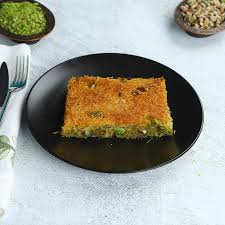
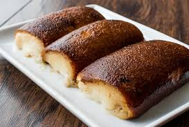
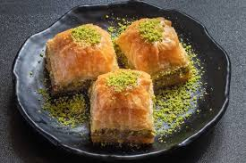
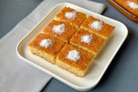
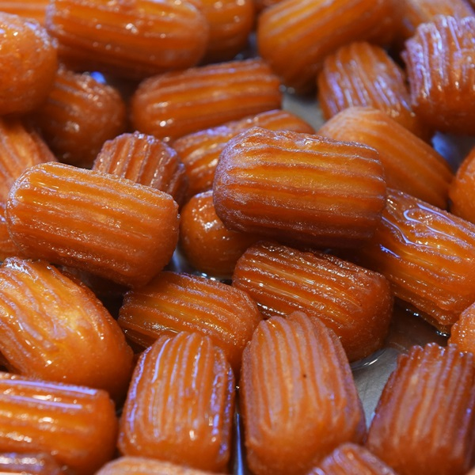
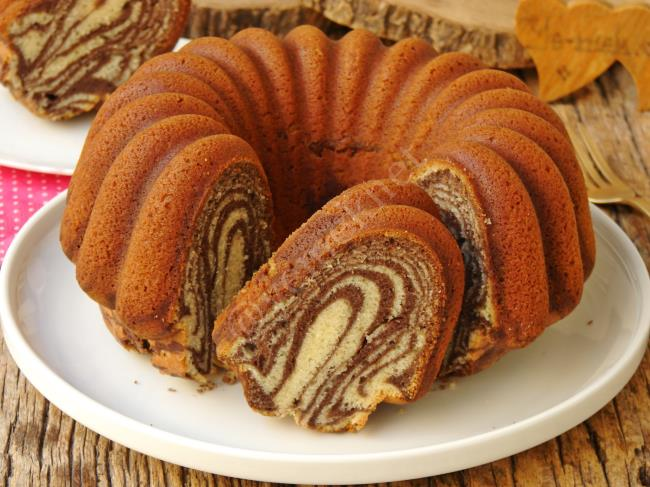
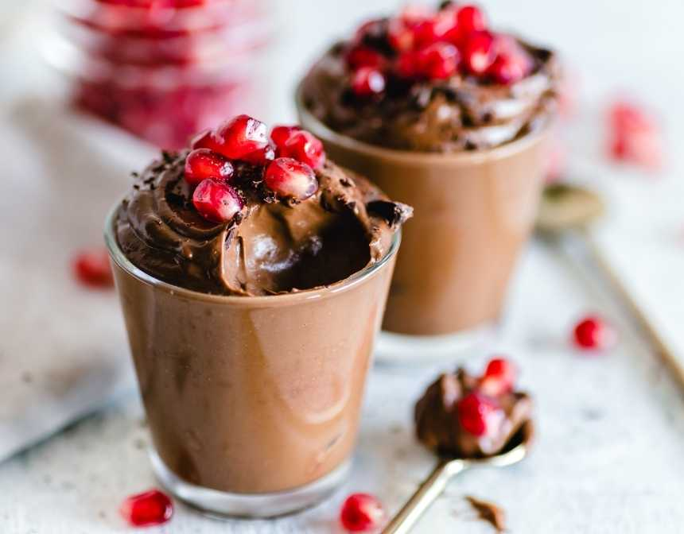

Tatlılar
Tatlılar, yemeklerin sonunda servis edilen ve genellikle tatlı bir lezzet sunan yiyeceklerdir. Dünya genelinde tatlılar kültürlere göre büyük çeşitlilik gösterir. Tatlılar pişirilerek veya soğutularak hazırlanır, servis edilir. Tatlılar, şık ve estetik bir şekilde sunulabilir.
Tatlılar mutfak kültürlerinin önemli bir parçasıdır.
- Sütlaç: Pirinç ve sütle yapılan üzerine tarçın serpilerek servis edilen bir tatlıdır. 
- Kadayıf: Tel kadayıf ve sütle yapılan bazen fıstık veya cevizle süslenen tatlıdır. 
- Kazandibi: Karamelize edilmiş sütlü tatlıdır.

-

- Baklava: Yufka katmanlarının arasına ceviz ya da fıstık yerleştirilip şerbetle tatlandırılan tatlıdır. 
- Revani: İrmik ve yoğurtla yapılan en sonunda da şerbetle taçlandırılan lezzetli bir tatlıdır. 
- Tulumba: Hamurun kızartılıp şerbetle buluşturulmasıyla yapılan dışının kıtırlığı ve içinini yumuşaklığı ile bilinen tatlıdır.
- Kurabiye: Çikolatalı, fındıklı, şekerli gibi farklı versiyonlara bulunan küçük tatlılardır. 
- Kek: Meyveli, çikolatalı, sade çeşitleri bulunan yumuşak tatlılardır.

- Çikolatalı pasta: Kremalı veya yoğun çikolatalı tatlılardır. Kek ve çikolata karışımından yapılır. 
- Çikolata mousse: Hafif, kremsi ve pürüzsüz dokusuyla bilinen çikolata ve kremanın birleşiminden oluşan popüler bir tatlıdır.

Türk mutfağının zarif ve geleneksel tatlıları arasında fırın sütlaç, muhallebi, güllaç gibi tatlılar yer alır.
Tatlılar çoğunlukla şeker içerdiğinden enerjik bir atıştırmalık olarak yemek sonrasında tatlı bir kapanış yapmayı sağlar. Bazı tatlılar yerel geleneklere, kutlamalara veya mevsimsel öğelere dayanarak hazırlanır bu da onları kültürel açıdan da zengin kılar.